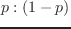

MT-Eusは、mutex lock, condition variable, セマフォと呼ばれる
3種類の同期手法を持っている。
mutex lockは、スレッド間の共有変数の連続アクセスのために使用される。
condition variableは、ロックの仮開放あるいは再獲得によってmutex-lockされた
部分の条件がtrueになることを待つことをスレッドに許可する。
セマフォは、イベントの発生を通知するためあるいはリソースの分割を制御するために
使用される。
Solarisのカーネルが時間分割スケージューリングを基本として何気なしにタスク
切り替えを発生するのと異なり、
これらの同期手法は、任意の環境切り替えを引き起こす。
Figure:
同期障壁と同期メモリポート
|  |
2016-03-23